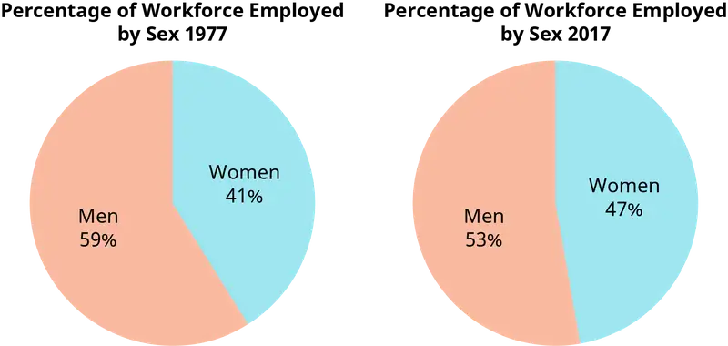
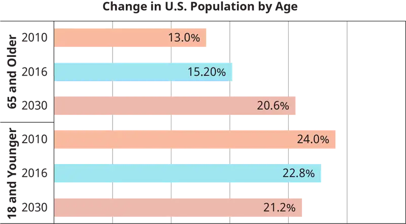
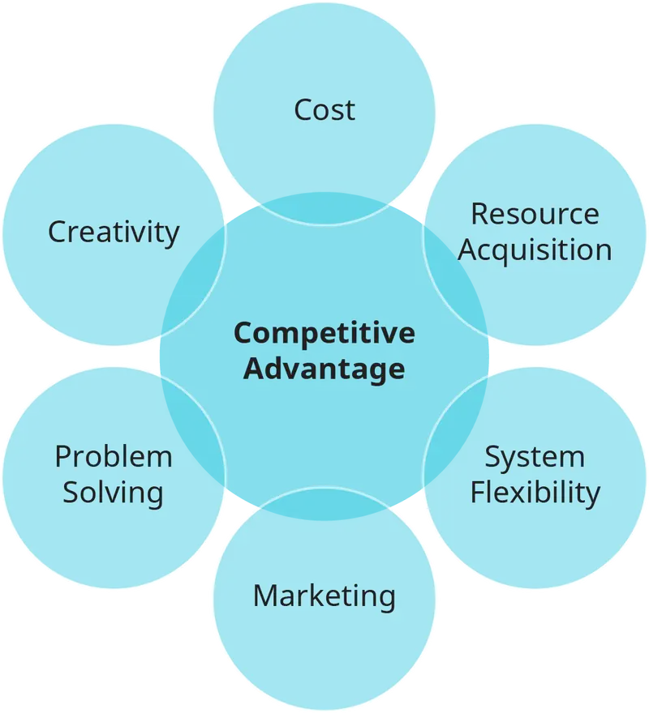

Chapter 12: Diversity in Organizations¶
Introduction¶
Learning Outcomes
After reading this chapter, you should be able to answer these questions:
- What is diversity?
- How diverse is the workforce?
- How does diversity impact companies and the workforce?
- What is workplace discrimination, and how does it affect different social identity groups?
- What key theories help managers understand the benefits and challenges of managing the diverse workforce?
- How can managers reap benefits from diversity and mitigate its challenges?
- What can organizations do to ensure applicants, employees, and customers from all backgrounds are valued?
Exploring Managerial Careers: Dr. Tamara A. Johnson, Assistant Chancellor for Equity, Diversity, and Inclusion at University of Wisconsin-Eau Claire
Dr. Tamara Johnson’s role as assistant chancellor for equity, diversity, and inclusion at the University of Wisconsin-Eau Claire involves supervising and collaborating with various campus entities to ensure their operations continue to support the university’s initiatives to foster diversity and equity within the university community. Dr. Johnson oversees the Affirmative Action, Blugold Beginnings (pre-college program), Gender and Sexuality Resource Center, Office of Multicultural Affairs, Ronald E. McNair Program, Services for Students with Disabilities, Student Support Services, University Police, and Upward Bound units and leads campus-wide initiatives to educate and train faculty, students, and staff about cultural awareness, diversity, and institutional equity.
Dr. Johnson’s journey to her current role began more than 20 years ago when she worked as a counselor for the Office of Multicultural Student Affairs at the University of Illinois. Her role in this office launched her on a path through university service—Dr. Johnson went on to work as the associate director for University Career Services at Illinois State University, the director for multicultural student affairs at Northwestern University, and the director for faculty diversity initiatives at the University of Chicago. As faculty at the Chicago School of Professional Psychology, Argosy University, and Northwestern University, Dr. Johnson taught counseling courses at the undergraduate, master’s, and doctorate levels.
Dr. Johnson’s work at the University of Wisconsin-Eau Claire involves developing a program and protocols to ensure all faculty and staff across the institution receive baseline diversity training. In addition, one of her goals is to include criteria related to diversity factors in the evaluations of all faculty/staff. A primary issue that she seeks to address is to increase the awareness of the challenges experienced by underrepresented students. This includes individuals who may come from backgrounds of low income, students of color, first-generation students, and other marginalized groups such as lesbian, gay, bisexual, and transgender students. Dr. Johnson understands the importance of creating initiatives to support individuals in those groups so their specific concerns may be addressed in multiple ways. As you will learn in this chapter, when leaders proactively create an inclusive and supportive climate that values diversity, benefits are produced that result in in positive outcomes for organizations.
12.1 An Introduction to Workplace Diversity¶
- What is diversity?
Diversity refers to identity-based differences among and between two or more people that affect their lives as applicants, employees, and customers. These identity-based differences include such things as race and ethnicity, gender, sexual orientation, and age. Groups in society based on these individual differences are referred to as identity groups. These differences are related to discrimination and disparities between groups in areas such as education, housing, healthcare, and employment. The term managing diversity is commonly used to refer to ways in which organizations seek to ensure that members of diverse groups are valued and treated fairly within organizations in all areas including hiring, compensation, performance evaluation, and customer service activities. The term valuing diversity is often used to reflect ways in which organizations show appreciation for diversity among job applicants, employees, and customers. Inclusion, which represents the degree to which employees are accepted and treated fairly by their organization, is one way in which companies demonstrate how they value diversity. In the context of today’s rapidly changing organizational environment, it is more important than ever to understand diversity in organizational contexts and make progressive strides toward a more inclusive, equitable, and representative workforce.
Three kinds of diversity exist in the workplace (see Table 12.1). Surface-level diversity represents an individual’s visible characteristics, including, but not limited to, age, body size, visible disabilities, race, or sex. A collective of individuals who share these characteristics is known as an identity group. Deep-level diversity includes traits that are nonobservable such as attitudes, values, and beliefs. Hidden diversity includes traits that are deep-level but may be concealed or revealed at the discretion of individuals who possess them. These hidden traits are called invisible social identities and may include sexual orientation, a hidden disability (such as a mental illness or chronic disease), mixed racial heritage, or socioeconomic status. Researchers investigate these different types of diversity in order to understand how diversity may benefit or hinder organizational outcomes.
Diversity presents challenges that may include managing dysfunctional conflict that can arise from inappropriate interactions between individuals from different groups. Diversity also presents advantages such as broader perspectives and viewpoints. Knowledge about how to manage diversity helps managers mitigate some of its challenges and reap some of its benefits.
Table 12.1 (Attribution: Copyright Rice University, OpenStax, under CC-BY 4.0 license)
| Types of Diversity | |
|---|---|
| Surface-level diversity | Diversity in the form of characteristics of individuals that are readily visible including, but not limited to, age, body size, visible disabilities, race or sex. |
| Deep-level diversity | Diversity in characteristics that are nonobservable such as attitudes, values, and beliefs, such as religion. |
| Hidden diversity | Diversity in characteristics that are deep-level but may be concealed or revealed at discretion by individuals who possess them, such as sexual orientation. |
Concept Check
What is diversity?
What are the three types of diversity encountered in the workplace?
12.2 Diversity and the Workforce¶
- How diverse is the workforce?
In 1997, researchers estimated that by the year 2020, 14% of the workforce would be Latino, 11% Black, and 6% Asian. Because of an increase in the number of racial minorities entering the workforce over the past 20 years, most of those projections have been surpassed as of 2016, with a workforce composition of 17% Hispanic or Latino of any race, followed by 12% Black and 6% Asian (see Figure 12.2). American Indians, Alaska Natives, Native Hawaiians, and Other Pacific Islanders together made up a little over 1% of the labor force, while people of two or more races made up about 2% of the labor force. Women constitute approximately 47% of the workforce compared to approximately 53% for men, and the average age of individuals participating in the labor force has also increased because more employees retire at a later age. Although White people still predominantly make up the workforce with a 78% share, the U.S. workforce is becoming increasingly more diverse, a trend that presents both opportunities and challenges. These demographic shifts in the labor market affect the workforce in a number of ways due to an increasing variety of workers who differ by sex, race, age, sexual orientation, disability status, and immigrant status.
Gender¶
Increasingly more women are entering the workforce. Compared to 59% in 1977, the labor force participation rate for men is now approximately 53% and is expected to decrease through 2024 to 52%. As the labor force participation rate decreases for men, the labor force growth rate for women will be faster. Their percentage of the workforce has steadily risen, as can be seen in Figure 12.3, which compares the percentage of the workforce by gender in 1977 to 2017.
Although more women are entering the labor force and earning bachelor’s degrees at a higher rate than men, women still face a number of challenges at work. The lack of advancement opportunities awarded to qualified women is an example of a major challenge that women face called the glass ceiling, which is an invisible barrier based on the prejudicial beliefs that underlie organizational decisions that prevent women from moving beyond certain levels within a company. Additionally, in organizations in which the upper-level managers and decision makers are predominantly men, women are less likely to find mentors, which are instrumental for networking and learning about career opportunities. Organizations can mitigate this challenge by providing mentors for all new employees. Such a policy would help create a more equal playing field for all employees as they learn to orient themselves and navigate within the organization.

One factor that greatly affects women in organizations is sexual harassment. Sexual harassment is illegal, and workers are protected from it by federal legislation. Two forms of sexual harassment that can occur at work are quid pro quo and hostile environment. Quid pro quo harassment refers to the exchange of rewards for sexual favors or punishments for refusal to grant sexual favors. Harassment that creates a hostile environment refers to behaviors that create an abusive work climate. If employees are penalized (for example by being demoted or transferred to another department) for refusing to respond to repeated sexual advances, quid pro quo sexual harassment has taken place. The telling of lewd jokes, the posting of pornographic material at work, or making offensive comments about women in general are examples of actions that are considered to create a hostile work environment. According to the Equal Employment Opportunity Commission, sexual harassment is defined as the “unwelcome sexual advances, requests for sexual favors, and other verbal or physical harassment of a sexual nature. Harassment can also include offensive remarks about a person’s sex.” Although both men and women can be sexually harassed, women are sexually harassed at work more often. In addition, Black and other minority women are especially likely to be subjected to sexual discrimination and harassment.
It is in the organization’s best interest to prevent sexual harassment from occurring. Ways to do this include companies providing ongoing (e.g., annual) training so that employees are able to recognize sexual harassment. Employees should know what constitutes acceptable and unacceptable behavior and what channels and protocols are in place for reporting unacceptable behaviors. Managers should understand their role and responsibilities regarding harassment prevention, and a clear and understandable policy should be communicated throughout the organization.
Just as gender-based discrimination is illegal and inappropriate, so is discrimination or mistreatment based on pregnancy, childbirth, or related medical conditions. While organizations may have different policies regarding maternity and paternity leave, they must comply with both the Pregnancy Discrimination Act and the Family Medical Leave Act.
Race¶
Another important demographic shift in workforce diversity is the distribution of race. (Note that we are using categories defined by the U.S. Census Bureau. It uses the term “Black (African American)” to categorize U.S. residents. In this chapter, we use the term “Black.”)
While the White non-Hispanic share of the workforce continues to shrink, the share of racial and ethnic minority groups will continue to grow. Specifically, Hispanic people and Asian people will grow at a faster rate than other racial minorities, and Hispanic people are projected to make up almost one-fifth of the labor force by 2024. The projected changes in labor force composition between 2014 and 2024 are as follows:
White non-Hispanic participation in the labor force will decline by 3%. Other groups’ share of the labor force is expected to increase: Black (10.1%), Hispanic/Latino (28%), Asian (23.2%), and Other groups (i.e., multiracial, American Indian, Alaska Native, Native Hawaiian, and Other Pacific Islanders) labor force share is expected to increase by 22.2%. With the workforce changing, managers will need to be mindful of issues employees encounter that are uniquely tied to their experiences based on race and ethnicity, including harassment, discrimination, stereotyping, and differential treatment by coworkers and decision makers in organizations.
Discrimination Against Black Employees¶
Race is one of the most frequent grounds for discrimination. Although Black people do not make up the largest share of the workforce for racial minorities, research studies show they face discrimination more often than other racial minorities. As a matter of fact, some experts believe that hiring discrimination against Black people has not declined over the past 25 years while workplace discrimination against other racial minority groups has declined.
Ethics in Practice: Discrimination in the Sharing Economy—#AirbnbWhileBlack
Airbnb, a popular home-sharing website founded in San Francisco in 2008, offers millions of homes for short-term rental in more than 190 countries. This company has revolutionized the sharing economy in the same way that ride-sharing services such as Uber and Lyft have, and according to the company, the site’s drive to connect hosts and potential renters has been able to contribute to the quality of life of both homeowners and travelers. According to Airbnb’s press releases and information campaigns, their services can reduce housing costs for travelers on a budget and can provide unique experiences for adventurous travelers who wish to have the flexibility to experience a city like a local. The organization also claims that most of its users are homeowners looking to supplement their incomes by renting out rooms in their homes or by occasionally renting out their whole homes. According to a statement, most of the listings on the site are rented out fewer than 50 nights per year.
Despite the carefully crafted messages Airbnb has presented to the public, in 2016 the company came under intense scrutiny when independent analyses by researchers and journalists revealed something startling: While some Airbnb hosts did in fact use the services only occasionally, a significant number of hosts were using the services as though they were hotels. These hosts purchased a large number of properties and continuously rented them, a practice that affected the availability of affordable housing in cities and, because these hosts were not officially registered as hoteliers, made it possible for Airbnb hosts to avoid paying the taxes and abiding by the laws that hotels are subject to.
Title II of the Civil Rights Act of 1964 mandates that hotels and other public accommodations must not discriminate based on race, national origin, sex, or religion, and Title VIII of the Civil Rights Act of 1968 (also known as the Fair Housing Act [FHA]) prohibits discrimination specifically in housing. However, Airbnb’s unique structure allows it to circumvent those laws. The company also claims that while it encourages hosts to comply with local and federal laws, it is absolved from responsibility if any of its hosts break these laws. In 2017, researcher Ben Edelman conducted a field experiment and found that Airbnb users looking to rent homes were 16% less likely to have their requests to book accepted if they had traditionally African American sounding names like Tamika, Darnell, and Rasheed.
These findings, coupled with a viral social media campaign, #AirbnbWhileBlack, in which users claimed they were denied housing requests based on their race, prompted the state of California’s Department of Fair Employment and Housing (DFEH) to file a complaint against the company. In an effort to resolve the complaint, Airbnb reported banning any hosts who were found to have engaged in discriminatory practices, and they hired former U.S. Attorney General Eric Holder and former ACLU official Laura Murphy to investigate any claims of discrimination within the company. In 2016, Airbnb released a statement outlining changes to company practices and policies to combat discrimination, and while they initially resisted demands by the DFEH to conduct an audit of their practices, the company eventually agreed to an audit of roughly 6,000 of the hosts in California who have the highest volume of properties listed on the site.
Sources: AirBnB Press Room, accessed December 24, 2018, https://press.atairbnb.com/about-us/; “Airbnb's data shows that Airbnb helps the middle class. But does it?”, The Guardian, accessed December 23, 2018, https://www.theguardian.com/technology/2016/jul/27/airbnb-panel-democratic-national-convention-survey ; and Quittner, Jeremy, “Airbnb and Discrimination: Why It’s All So Confusing”, Fortune, June 23, 2016, http://fortune.com/2016/06/23/airbnb-discrimination-laws/.
Discussion Questions
What are some efforts companies in the sharing economy can take before problems of discrimination threaten to disrupt operations?
Should Airbnb be held responsible for discriminatory actions of its hosts?
Currently, White men have higher participation rates in the workforce than do Black men, and Black women have slightly higher participation rates than White women. Despite growth and gains in both Black education and Black employment, a Black person is considerably more likely to be unemployed than a White person, even when the White person has a lower level of education or a criminal record.
Black people frequently experience discrimination in the workplace in spite of extensive legislation in place to prohibit such discrimination. Research has shown that stereotypes and prejudices about Black people can cause them to be denied the opportunity for employment when compared to equally qualified White people. It is estimated that about 25% of businesses have no minority workers and another 25% have less than 10% minority workers. In terms of employed Black people, research has shown that, regardless of managers’ race, managers tended to give significantly higher performance ratings to employees who were racially similar to them. Because White people are much more likely to be managers than Black people, this similarity effect tends to advantage White employees over Black employees. Black people are also significantly more likely to be hired in positions that require low skills, offer little to no room for growth, and pay less. These negative employment experiences affect both the mental and physical health of Black employees.
Hispanic/Latino¶
Hispanic people are the second-fastest-growing minority group in the United States behind Asian people, and they make up 17% of the labor force. Despite this and the fact that Hispanic people have the highest labor participation rate of all the minority groups, they still face discrimination and harassment in similar ways to other minority groups. (Note that we are again using the categories as defined by the U.S. Census Bureau, which predominantly uses the term "Hispanic" to refer to people of Cuban, Mexican, Puerto Rican, South or Central American, or other Spanish culture or origin.)
Hispanic people can be of any race. As a matter of fact, increasingly more Hispanic people are identifying racially as White. In 2004 almost half of Hispanic people identified themselves racially as White, while just under half identified themselves as “some other race.” More than 10 years later, approximately 66% of Hispanic people now identify themselves racially as White while only 26% identify themselves as “some other race.” The remaining Hispanic population, totaling approximately 7%, identify as either Black, American Indian, Asian, Alaskan Native, Pacific Islander, or Native Hawaiian.
Why would a minority identity group identify racially as White? A Pew study found that the longer Hispanic families lived in the United States, the more likely they were to claim White as their race even if they had not done so in the past. This suggests that upward mobility in America may be perceived by some Hispanic people to be equated with “Whiteness.” Consequently, Hispanic people who self-identify racially as White experience higher rates of education and salary, and lower rates of unemployment. Additionally, only 29% of Hispanic people polled by the Pew Hispanic Center believe they share a common culture. According to the Pew Research Center, this finding may be due to the fact that the Hispanic ethnic group in the United States is made up of at least 14 Hispanic origin groups (such as Puerto Rican, Cuban, Spanish, Mexican, Dominican, and Guatemalan, among many others). Each of these groups has its own culture with different customs, values, and norms.
These cultural differences among the various Hispanic groups, combined with different self-perceptions of race, may also affect attitudes toward their workplace environment. For example, one study found that the absenteeism rate among Black people was related to the level of diversity policies and activities visible in the organization, while the absenteeism rate among Hispanic people was similar to that of White people and not related to those diversity cues. Results from this study suggest that managers need to be aware of how diversity impacts their workplace, namely addressing the relationship between Hispanic job seekers or workers and organizational outcomes concerning diversity policies as it may differ from that of other racial minorities.
Asian and Asian American¶
Asian people are the fastest-growing ethnic group in the United States, growing 72% between 2000 and 2015. Compared to the rest of the U.S. population overall, households headed by Asian Americans earn more money and are more likely to have household members who hold a bachelor’s degree. However, there is a wide range of income levels among the Asian population that differs between the more than 19 groups of Asian origin in the United States.
Similar to other racial and ethnic minority groups, Asian people are stereotyped and face discrimination at work. Society through media often stereotypes Asian men as having limited English-speaking skills and as being highly educated, affluent, analytical, and good at math and science. Asian women are often portrayed as weak and docile. For Asian women, and other minority women as well, social stereotypes depicting them as exotic contribute to reports of sexual harassment from women minority groups.
The model minority myth is a reflection of perceptions targeting Asian people and Asian Americans that contrast the stereotypes of “conformity” and “success” of Asian men with stereotypes of “rebelliousness” and “laziness” of other minority men. It also contrasts the stereotyped “exotic” and “obedient” nature of Asian women against the stereotypical beliefs that White women are “independent” and “pure.” These perceptions are used not only to invalidate injustice that occurs among other racial minorities, but also to create barriers for Asian and Asian Americans seeking leadership opportunities as they are steered toward “behind the scenes” positions that require less engagement with others. These stereotypes also relegate Asian women into submissive roles in organizations, making it challenging for Asian men and women to advance in rank at the same rate as White male employees.
Multiracial¶
Although the U.S. Census Bureau estimates that approximately 2% of the U.S. population describes themselves as belonging to more than one race, the Pew Research Center estimates that number should be higher, with around 7% of the U.S. population considered multiracial. This is due to the fact that some individuals may claim one race for themselves even though they have parents from different racial backgrounds. To complicate matters even more, when collecting data from multiracial group members, racial identity for individuals in this group may change over time because race is a social construct that is not necessarily based on a shared culture or country of origin in the same way as ethnicity. As a result, multiracial individuals (and Hispanic people) have admitted to changing their racial identity over the course of their life and even based on the situation. Approximately 30% of multiracial individuals polled by the Pew Research Center say that they have varied between viewing themselves as belonging to one race or belonging to multiple races. Within the group polled, the order in which they first racially identified as belonging to one racial group versus belonging to more than one group varied.
Despite the fact that multiracial births have risen tenfold between 1970 and 2013, their participation in the labor force is only around 2%. Additionally, multiracial individuals with a White racial background are still considered a racial minority unless they identify themselves solely as White, and approximately 56% of them on average say they have been subjected to racial jokes and slurs. Discrimination also varies when multiracial groups are broken down further, with Black–American Indians having the highest percentage of individuals reporting discrimination and White–Asian people having the lowest percentage.
At work, multiracial employees are sometimes mistaken for races other than their own. If their racial minority background is visible to others, they may experience negative differential treatment. Sometimes they are not identified as having a racial or ethnic minority background and are privy to disparaging comments from unsuspecting coworkers about their own race, which can be demoralizing and can lead to lower organizational attachment and emotional strain related to concealing their identity.
Other Groups¶
Approximately 1% of the labor force identifies as American Indian, Alaska Native, Native Hawaiian or Pacific Islander, or some other race.
Age¶
The age distribution of an organization’s workforce is an important dimension of workplace diversity as the working population gets older. Some primary factors contributing to an older population include the aging of the large Baby Boomer generation (people born between 1946 and 1964), lower birth rates, and longer life expectancies due to advances in medical technology and access to health care. As a result, many individuals work past the traditional age of retirement (65 years old) and work more years than previous generations in order to maintain their cost of living.
Figure 12.5 compares the percentage of the population over the age of 65 to those under the age of 18 between 2010 and 2016. The number of older individuals has increased and is projected to reach 20.6% by the year 2030 while the number of younger individuals has steadily decreased within that time period. These numbers imply that organizations will increasingly have employees across a wide range of ages, and cross-generational interaction can be difficult to manage. Although older workers are viewed as agreeable and comfortable to work with, they are also stereotyped by some employees as incompetent and less interested in learning new tasks at work compared to younger workers. Studies have found support for the proposition that age negatively relates to cognitive functioning. However, if managers offer less opportunity to older workers solely because of declining cognitive functioning, it can be detrimental to organizational performance because older workers outperform younger workers on a number of other job performance measures. Compared to younger workers, older workers are more likely to perform above their job expectations and follow safety protocols. They are also less likely to be tardy, absent, or abuse drugs or alcohol at work compared to their younger counterparts.

Sexual Orientation and Gender Identity¶
Sexual orientation diversity is increasing in the workforce. In June, 2020, the Supreme Court ruled that the Civil Rights Act prohibits discrimination based on sexual orientation and gender identity. Until this ruling, only 21 states and Washington D.C. prohibited such discrimination. With this new federal protection, individuals cannot for employment or fired for their sexual orientation , gender identity, or gender expression. However, although the Civil Rights Act does not provide federal protection to lesbian, gay, bisexual and transgender, and queer/questioning (LGBTQ) employees, that protection is not complete. LGBTQ people can still face other types of discrimination inside and outside of the workplace, and some employers and lawmakers may take up the issue in the future. On a positive note, more than half of the Fortune 500 companies have corporate policies that protect sexual minorities from discrimination at work and offer domestic-partner benefits. Many employers are beginning to understand that being perceived as inclusive will make them more attractive to a larger pool of job applicants. Furthermore, many organizations have come to recognize that gender and sexual orientation equity aligns to their mission and ethics.
Unfortunately, the percentage of hate crimes relating to sexual orientation discrimination has increased. Indeed, LGBTQ employees are stigmatized so much that in a recent study, researchers found that straight-identifying participants were more attracted to employers with no job security to offer them compared to gay-friendly employers. In other words, individuals would waive job security to avoid working with sexual minorities. Also, compared to heterosexuals, sexual minorities have higher education levels but still face hiring and treatment discrimination frequently.
LGBTQ employees are often faced with the decision of whether or not to be truthful about their sexual orientation at work for fear of being stigmatized and treated unfairly. To be clear, any stigmatization is the fault of the people who mistreat others, and sometimes even the organization itself. But as a result, LGTBQ and other people may choose to engage in what is sometimes called passing, or the decision not to disclose something about oneself. Passing often involves a great risk of emotional strain that can affect performance and wellbeing. Individuals who pass may distance themselves from coworkers or clients to avoid disclosure about their personal life. This behavior can also result in decreased networking and mentoring opportunities, which over time can limit advancement opportunities. The decision to be transparent about sexual orientation is sometimes called revealing. Just like passing, revealing has its own set of risks including being ostracized, stigmatized, and subjected to other forms of discrimination at work. However, compared to passing, the benefits of building relationships at work and using their identity as a catalyst for tolerance and progressive organizational change may outweigh the risks when LGBTQ employees decide to reveal. The decision to "come out" should be made exclusively by the individual; "outing" someone else as any sexual orientation or gender identity is considered highly inappropriate and hurtful, and may have employment-related consequences.
Research shows that when laws are passed to prevent sexual orientation discrimination, incidents of workplace discrimination decrease. This same effect occurs when firms adopt policies that protect the rights of sexual minority employees. By creating a safe and inclusive work environment for LGBTQ employees, companies can create a culture of tolerance and trust for all employees regardless of their sexual orientation or gender identity.
Managing Change: Removing Bias In Recruiting
An increasing number of companies are testing new and innovative methods of recruiting. In many cases, firms remove any identifying information about applicants during the recruitment process. An example of this may include anonymous applications that omit fields requesting information such as an applicant’s name or age. Using computer application technology, some companies like Google administer surveys to their anonymous applicants that measure the abilities required for the job before they are considered in the next step of the recruitment process. Alternatively, companies may request that applicants remove identifying information such as names and address from their resumes before applying for positions. As resumes are received, hiring managers can assign a temporary identification number.
Although more companies are using this method of recruiting, the idea is not new for symphony orchestras, many of which have been using this type of auditioning since the 1970s. In some instances musicians audition behind screens so they are evaluated only by their music. This process removes bias associated with race and gender because the performer cannot be seen and only heard. A study investigating this practice examined 11 symphony orchestras that varied their auditions. Researchers found that those orchestras that held "unseen" auditions increased the likelihood that a woman would be hired by between 25 and 46%. A recruitment process like this can help organizations attract more candidates, hire the best talent, increase their workplace diversity, and avoid discrimination liability.
In other efforts, organizations work to alter their job descriptions to remove terms that result in gender or other biases. By involving diversity and equity experts, and sometimes using artificial intelligence-based language analysis, recruiters can eliminate unintended barriers and improve their hiring processes. Sources: Grothaus, M. (Mar 14 2016). How “blind” recruitment works and why you should consider it. Fast Company. Retrieved from https://www.fastcompany.com/3057631/how-blind-recruitment-works-and-why-you-should-consider; and MIller, C.C. (Feb 25 2016). Is blind hiring the best hiring? The New York Times Magazine. Retrieved from https://www.nytimes.com/2016/02/28/magazine/is-blind-hiring-the-best-hiring.html.
Discussion Questions
Should all companies change their resume screening and interview processes to eliminate biases or are there exceptions that must be considered?
If improved recruiting helps eliminate bias during the recruitment process, then what does that say about social media platforms such as Linked In that are commonly used for recruiting applicants? Will using those platforms expose companies to greater liability compared to using more traditional means of recruiting?
How does working to eliminate bias recruiting help organizations? How may it hinder organizations?
Immigrant Workers¶
Every year a new record is set for the time it takes to reach the U.S. cap of H-1B visas granted to employers. H- 1B visas are a type of work visa, a temporary documented status that authorizes individuals to permanently or temporarily live and work in the United States. As a result of the demand for work visas by employers, the number of immigrant workers in the U.S. workforce has steadily grown within the last decade from 15% in 2005 to 17% in 2016. Compared to those born in the United States, the immigrant population in America is growing significantly faster. This is partly because of the U.S. demand for workers who are proficient in math and science and wish to work in America.
Although a huge demand for immigrant labor exists in the United States, immigrant labor exploitation occurs, with immigrant employees receiving lower wages and working longer hours compared to American workers. Foreign-born job seekers are attracted to companies that emphasize work visa sponsorship for international employees, yet they are still mindful of their vulnerability to unethical employers who may try to exploit them. For example, Lambert and colleagues found that some of the job-seeking MBA students from the Philippines in their study believed that companies perceived to value international diversity and sponsor H-1B visas signaled a company wishing to exploit workers. Others believed that those types of companies might yield diminishing returns to each Filipino in the company because their token value becomes limited. In news stories, companies have been accused of drastically shortchanging foreign student interns on their weekly wages. In another case, Infosys, a technology consulting company, paid $34 million to settle allegations of visa fraud due to suspicion of underpaying foreign workers to increase profits.
Other Forms of Diversity at Work¶
Workers with disabilities are projected to experience a 10% increase in job growth through the year 2022. This means that more public and corporate policies will be revised to allow greater access to training for workers with disabilities and employers. Also, more companies will use technology and emphasize educating employees about physical and mental disabilities as workplace accommodations are used more often.
In the past, the United States has traditionally been a country with citizens who predominantly practice the Christian faith. However, over the past almost 30 years the percentage of Americans who identify as Christian has significantly decreased—by approximately 12%. Over that same time period, affiliation with other religions overall increased by approximately 25%. The increase in immigrant workers from Asian and Middle Eastern countries means that employers must be prepared to accommodate religious beliefs other than Christianity. Although federal legislation protects employees from discrimination on the basis of race, religion, and disability status, many employers have put in place policies of their own to deal with the variety of diversity that is increasingly entering the workforce.
Concept Check
How is diversity defined in relation to the workplace?
What are the components that make up a diverse workplace and workforce?
12.3 Diversity and Its Impact on Companies¶
- How does diversity impact companies and the workforce?
Due to trends in globalization and increasing ethnic and gender diversity, it is imperative that employers learn how to manage cultural differences and individual work attitudes. As the labor force becomes more diverse there are both opportunities and challenges to managing employees in a diverse work climate. Opportunities include gaining a competitive edge by embracing change in the marketplace and the labor force. Challenges include effectively managing employees with different attitudes, values, and beliefs, in addition to avoiding liability when leadership handles various work situations improperly.
Reaping the Advantages of Diversity¶
The business case for diversity introduced by Taylor Cox and Stacy Blake outlines how companies may obtain a competitive advantage by embracing workplace diversity. Six opportunities that companies may receive when pursuing a strategy that values diversity include cost advantages, improved resource acquisition, greater marketing ability, system flexibility, and enhanced creativity and better problem solving (see Figure 12.6).

Cost Advantages¶
Traits such as race, gender, age, and religion are protected by federal legislation against various forms of discrimination (covered later in this chapter). Organizations that have policies and procedures in place that encourage tolerance for a work climate of diversity and protect female and minority employees and applicants from discrimination may reduce their likelihood of being sued due to workplace discrimination. Cox and Blake identify this decreased liability as an opportunity for organizations to reduce potential expenses in lawsuit damages compared to other organizations that do not have such policies in place.
Additionally, organizations with a more visible climate of diversity experience lower turnover among women and minorities compared to companies that are perceived to not value diversity. Turnover costs can be substantial for companies over time, and diverse companies may ameliorate turnover by retaining their female and minority employees. Although there is also research showing that organizations that value diversity experience a higher turnover of White employees and male employees compared to companies that are less diverse, some experts believe this is due to a lack of understanding of how to effectively manage diversity. Also, some research shows that White people with a strong ethnic identity are attracted to diverse organizations similarly to non-White people.
Resource Acquisition¶
Human capital is an important resource of organizations, and it is acquired through the knowledge, skills, and abilities of employees. Organizations perceived to value diversity attract more women and minority job applicants to hire as employees. Studies show that women and minorities have greater job-pursuit intentions and higher attraction toward organizations that promote workplace diversity in their recruitment materials compared to organizations that do not. When employers attract minority applicants, their labor pool increases in size compared to organizations that are not attractive to them. As organizations attract more job candidates, the chances of hiring quality employees increases, especially for jobs that demand highly skilled labor. In summary, organizations gain a competitive advantage by enlarging their labor pool by attracting women and minorities.
Marketing¶
When organizations employ individuals from different backgrounds, they gain broad perspectives regarding consumer preferences of different cultures. Organizations can gain insightful knowledge and feedback from demographic markets about the products and services they provide. Additionally, organizations that value diversity enhance their reputation with the market they serve, thereby attracting new customers.
System Flexibility¶
When employees are placed in a culturally diverse work environment, they learn to interact effectively with individuals who possess different attitudes, values, and beliefs. Cox and Blake contend that the ability to effectively interact with individuals who differ from oneself builds cognitive flexibility, the ability to think about things differently and adapt one’s perspective. When employees possess cognitive flexibility, system flexibility develops at the organizational level. Employees learn from each other how to tolerate differences in opinions and ideas, which allows communication to flow more freely and group interaction to be more effective.
Creativity and Problem Solving¶
Teams from diverse backgrounds produce multiple points of view, which can lead to innovative ideas. Different perspectives lead to a greater number of choices to select from when addressing a problem or issue.
Life experience varies from person to person, sometimes based on race, age, or sex. Creativity has the opportunity to flourish when those experiences are shared. Diverse teams not only produce more alternatives, but generate a broader range of perspectives to address tasks and problems. One way in which diverse teams enhance problem-solving ability is by preventing groupthink, a dysfunction in decision-making that occurs in homogeneous groups as a result of group pressures and group members’ desire for conformity and consensus. Diverse group membership prevents groupthink because individuals from varied backgrounds with different values, attitudes, and beliefs can test the assumptions and reasoning of group members’ ideas.
Aligning Diversity Programs with an Organization’s Mission and Strategic Goals¶
Diversity helps organizations perform best when it is aligned with a specific business strategy. For example, when companies use heterogeneous management teams that are directed by an entrepreneurial strategy focusing on innovation, the companies’ productivity increases.
When an entrepreneurial strategy is not present, however, team diversity has little effect on productivity. An entrepreneurial strategy includes innovation that reflects a company’s commitment to being creative, supporting new ideas, and supporting experimentation as a way to gain a competitive advantage. In other words, managers may properly utilize the multiple perspectives that emerge from heterogeneous teams by integrating them as a resource for pursuing the overall strategy of the organization.
Using Human Resources Tools Strategically¶
To effectively align diversity with an organization’s strategy, the human resources function must be able to engage employees at dynamic levels. Using a strategic human resources management approach to an organization can successfully integrate diversity with the organization’s goals and objectives. Strategic human resources management (SHRM) is a system of activities arranged to engage employees in a manner that assists the organization in achieving a sustainable competitive advantage. SHRM practices vertically integrate with the mission and strategy of the organization while horizontally integrating human resources activities across its functional areas. By doing so, a unique set of resources can be made available to specific to the needs of the organization. Furthermore, when human resources becomes a part of the strategic planning process instead of just providing ancillary services, improved communication, knowledge sharing, and greater synergy between decision makers can occur within the organization to improve organizational functioning.
The resource-based view of the firm has been used to support the argument for diversity because it demonstrates how a diverse workforce can create a sustainable competitive advantage for organizations. Based on the resource-based view of the firm, when companies possess resources that are rare, valuable, difficult to imitate, and non-substitutable, a sustained competitive advantage can be attained. The SHRM approach assumes that human capital—the current and potential knowledge, skills, and abilities of employees—is instrumental to every organization’s success and sustainability and longevity.
If a diverse composition of employees within organizations is rare, employing minorities in positions of leadership is even rarer. One exception is Northern Trust, an investment management firm that was recently listed on Forbes magazine’s 2018 Best Employers for Diversity list. Thirty-eight percent of Northern Trust’s top executives are women, which is impressive because it matches the average percentage of women in full-time one-year MBA programs over the past five years. The average for S&P 500 companies is just 27%. In addition, African Americans make up 23% of Northern Trust’s board, which also demonstrates the commitment Northern Trust has to diversity. This rare degree of diversity helps Northern Trust become an employer of choice for minorities and women. In turn, attracting minority applicants increases the labor pool available to Northern Trust and increases its ability to find good talent.
Diverse companies may capitalize on the multiple perspectives that employees from different backgrounds contribute to problem solving and idea generation. In group settings, members from collectivist cultures from Asia and South America, for example, engage with others on tasks differently than members from North America. Similarly, Asian, Black, and Hispanic people usually act more collectively and engage more interdependently than White people, who are generally more individualistic. More harmonious working interactions benefit group cohesion and team performance, and employees can grasp better ways of doing things when there is a diverse population to learn from.
For a company to attain a sustained competitive advantage, its human resource practices must be difficult to copy or imitate. As we will see later in the chapter, companies may hold one of three perspectives on workplace diversity. The integration and learning perspective results in the best outcomes for employees and the organization. However, it is not easy to become an employer that can effectively manage diversity and avoid the challenges we learned about earlier in this chapter. Historical conditions and often-complex interplay between various organizational units over time can contribute to a company’s ability to perform effectively as a diverse organization. Best practices for targeting diverse applicants or resolving conflicts based on cultural differences between employees may occur organically and later become codified into the organizational culture. Sometimes, however, the origin of diversity practices is unknown because they arose from cooperation among different functional areas (e.g., marketing and human resources working strategically with leadership to develop recruitment ideas) that occurred so long ago that not even the company itself, let alone other companies, could replicate the process.
Diversity and Organizational Performance¶
Research indicates that having diversity in an organization produces mixed results for its success. Some studies show a positive relationship, some show a negative relationship, and others show no relationship between diversity and performance. Some researchers believe that although findings regarding a direct relationship between diversity and success in the marketplace may be inconsistent, the relationship may be due to other variables not taken into account.
Taking the resource-based view perspective, Richard and colleagues demonstrated that racially diverse banking institutions focused on innovation experienced greater performance than did racially diverse banks with a low focus on innovation. These findings suggest that for the potential of racial diversity to be fully realized, companies should properly manage the system flexibility, creativity, and problem-solving abilities used in an innovative strategy. Other studies show that when top management includes female leadership, firm performance improves when organizations are innovation driven.
Concept Check
What are the challenges and opportunities that diversity provides to companies?
What are the responsibilities of human resources regarding diversity?
Can diversity be a strategic advantage to organizations?
12.4 Challenges of Diversity¶
- What is workplace discrimination, and how does it affect different social identity groups?
Although diversity has it benefits, there are also challenges that managers must face that can only be addressed with proper leadership. Some of the most common challenges observed in organizations and studied in research include lower organizational attachment and misunderstanding work diversity initiatives and programs.
Lower Organizational Attachment¶
Although diversity programs attract and retain women and minorities, they may have the opposite effect on other, nonminority employees. When diversity is not managed effectively, White and male employees can feel alienated from or targeted by the organization as diversity programs are put in place. A study that examined 151 work groups across three large organizations investigated whether the proportion of group membership based on race or sex affected the group members’ absentee rates, psychological attachment to their work group, and turnover intentions, three factors that play significant roles in an employee’s attachment to their organization. Results showed a positive relationship between group heterogeneity and lower organizational attachment, higher turnover intentions, and greater frequency of absences for men and for White group members. In other words, as work group diversity increased, White employees and male employees felt less attached to the organization and were more likely to quit. Because heterogeneous groups improve creativity and judgement, managers should not avoid using them because they may be challenging to manage. Instead, employers need to make sure they understand the communication structure and decision-making styles of their work groups and seek feedback from employees to learn how dominant group members may adjust to diversity.
Legal Challenges and Diversity¶
The legal system is used to combat discrimination. Among the ways that we will cover here are reverse discrimination, workplace discrimination, harassment, age discrimination, disability discrimination, national origin discrimination, pregnancy discrimination, race/color discrimination, religious discrimination, sex-based discrimination and other forms of discrimination.
Reverse Discrimination¶
As research shows, workplace discrimination against women and racial or ethnic minorities is common. Reverse discrimination is a term that has been used to describe a situation in which dominant group members perceive that they are experiencing discrimination based on their race or sex. This type of discrimination is uncommon, but is usually claimed when the dominant group perceives that members of a protected (diverse) class of citizens are given preference in workplace or educational opportunities based not on their merit or talents, but on a prescribed preferential treatment awarded only on the basis of race or sex.
Research conducted in the 1990s shows that only six federal cases of reverse discrimination were upheld over a four-year period (1990–1994), and only 100 of the 3,000 cases for discrimination over that same four-year period were claims of reverse discrimination. Interestingly, a recent poll administered by the Robert Wood Johnson Foundation and the Harvard T.H. Chan School of Public Health found that a little more than half of White Americans believe that White people face discrimination overall, and 19% believe they have experienced hiring discrimination due to the color of their skin. This misperception stems in part from the recalibration of the labor force as it become more balanced due to increased equal employment opportunities for everyone. Members of dominant identity groups, White people and men, perceive fewer opportunities for themselves when they observe the workforce becoming more diverse. In reality, the workforce of a majority of companies is still predominantly White and male employees. The only difference is that legislation protecting employees from discrimination and improvements in equal access to education have created opportunities for minority group members when before there were none.
Workplace Discrimination¶
Workplace discrimination occurs when an employee or an applicant is treated unfairly at work or in the job-hiring process due to an identity group, condition, or personal characteristic such as the ones mentioned above. Discrimination can occur through marital status, for example when a person experiences workplace discrimination because of the characteristics of a person to whom they are married. Discrimination can also occur when the offender is of the same protected status of the victim, for example when someone discriminates against someone based on a national origin that they both share.
The Equal Employment Opportunity Commission (EEOC) was created by Title VII of the Civil Rights Act of 1964 with the primary goal of making it illegal to discriminate against someone in the workplace due to their race, national origin, sex, disability, religion, or pregnancy status., and the 2020 Supreme Court decision upheld the same protections for sexual orientation and gender identity. The EEOC enforces laws and issues guidelines for employment-related treatment. It also has the authority to investigate charges of workplace discrimination, attempt to settle the charges, and, if necessary, file lawsuits when the law has been broken.
All types of workplace discrimination are prohibited under different laws enacted and enforced by the EEOC, which also considers workplace harassment and sexual harassment forms of workplace discrimination and mandates that men and women must be given the same pay for equal work.
The provision for equal pay is covered under the Equal Pay Act of 1963, which was an amendment to the Fair Labor Standards Act of 1938. Virtually all employers are subject to the provisions of the act, which was an attempt to address pay inequities between men and women. More than 50 years later, however, women still earn about 80 cents to every dollar that men earn, even while performing the same or similar jobs.
Harassment¶
Harassment is any unwelcome conduct that is based on characteristics such as age, race, national origin, disability, gender, or pregnancy status. Harassment is a form of workplace discrimination that violates Title VII of the Civil Rights Act of 1964, the Age Discrimination in Employment Act of 1967, and the Americans with Disabilities Act of 1990.
Sexual harassment specifically refers to harassment based on a person’s sex, and it can (but does not have to) include unwanted sexual advances, requests for sexual favors, or physical and verbal acts of a sexual nature. Though members of any sex can be the victim of sexual harassment, women are the primary targets of this type of harassment.
Age Discrimination¶
Age discrimination consists of treating an employee or applicant less favorably due to their age. The Age Discrimination in Employment Act (ADEA) forbids discrimination against individuals who are age 40 and above. The act prohibits harassment because of age, which can include offensive or derogatory remarks that create a hostile work environment.
Disability Discrimination¶
A person with a disability is a person who has a physical or mental impairment that limits one or more of the person’s life actions. Disability discrimination occurs when an employee or applicant who is covered by the Americans with Disabilities Act (ADA) is treated unfavorably due to their physical or mental disability. The ADA is a civil rights law that prohibits discrimination in employment, public services, public accommodations, and telecommunications against people with disabilities. To be covered under the ADA, individuals must be able to perform the essential functions of their job with or without reasonable accommodations. Research has shown that reasonable accommodations are typically of no or low cost (less than $100) to employers.
National Origin Discrimination¶
National origin discrimination involves treating someone unfavorably because of their country of origin, accent, ethnicity, or appearance. EEOC regulations make it illegal to implement an employment practice or policy that applies to everyone if it has a negative impact on people of a certain national origin. For example, employers cannot institute an “English-only” language policy unless speaking English at all times is essential to ensure the safe and efficient operation of the business. Employers also cannot mandate employees be fluent in English unless fluency in English is essential to satisfactory job performance. The EEOC also prohibits businesses from hiring only U.S. citizens or lawful residents unless the business is required by law to do so.
Pregnancy Discrimination¶
Pregnancy discrimination involves treating an employee or applicant unfairly because of pregnancy status, childbirth, or medical conditions related to pregnancy or childbirth. The Pregnancy Discrimination Act (PDA) prohibits any discrimination as it relates to pregnancy in any of the following areas: hiring, firing, compensation, training, job assignment, insurance, or any other employment conditions. Further, certain conditions that result from pregnancy may be protected under the ADA, which means employers may need to make reasonable accommodations for any employee with disabilities related to pregnancy.
Under the Family and Medical Leave Act (FMLA), new parents, including adoptive and foster parents, may be eligible for 12 weeks of unpaid leave (or paid leave only if earned by the employee) to care for the new child. Also, nursing mothers have the right to express milk on workplace premises.
Race/Color Discrimination¶
Race/color discrimination involves treating employees or applicants unfairly because of their race or because of physical characteristics typically associated with race such as skin color, hair color, hair texture, or certain facial features.
As with national origin discrimination, certain workplace policies that apply to all employees may be unlawful if they unfairly disadvantage employees of a certain race. Policies that specify that certain hairstyles must or must not be worn, for example, may unfairly impact African American employees, and such policies are prohibited unless their enforcement is necessary to the operations of the business.
Religious Discrimination¶
Religious discrimination occurs when employees or applicants are treated unfairly because of their religious beliefs. The laws protect those who belong to traditional organized religions and those who do not belong to organized religions but hold strong religious, ethical, or moral beliefs of some kind. Employers must make reasonable accommodations for employees’ religious beliefs, which may include flexible scheduling or modifications to workplace practices. Employees are also permitted accommodation when it comes to religious dress and grooming practices, unless such accommodations will place an undue burden on the employer. Employees are also protected from having to participate (or not participate) in certain religious practices as terms of their employment.
Sex-Based Discrimination¶
Sex-based discrimination occurs when employees or applicants are treated unfairly because of their sex. This form of discrimination includes unfair treatment due to gender, transgender status, and sexual orientation. Harassment and policies that unfairly impact certain groups protected under sex discrimination laws are prohibited under EEOC legislation.
The key diversity-related federal laws are summarized in Table 12.2.
Table 12.2 (Attribution: Copyright Rice University, OpenStax, under CC-BY 4.0 license)
| Key Diversity Related Legislation | |
|---|---|
| Title VII of the Civil Rights Act of 1964 | Created the Equal Employment Opportunity Commission with the primary role of making it illegal to discriminate against someone in the workplace due to their race, national origin, sex, disability, religion, or pregnancy status. |
| Equal Pay Act of 1963 | Mandates that men and women must be given the same pay for equal work |
| Age Discrimination in Employment Act (ADEA) | Forbids discrimination against individuals who are age 40 and above. |
| Americans with Disabilities Act (ADA) | Prohibits discrimination against people with disabilities in employment, public services, public accommodations, and in telecommunications |
| Pregnancy Discrimination Act (PDA) | Prohibits any discrimination as it relates to pregnancy, including hiring, firing, compensation, training, job assignment, insurance, or any other employment conditions. |
| Family and Medical Leave Act (FMLA) | Grants new parents up to 12 weeks of paid or unpaid leave to care for the new child, and gives nursing mothers the right to express milk on workplace premises. |
Other Types of Discrimination¶
Beyond the key types of discrimination outlined by the EEOC, diversity and management scholars have identified other types of discrimination that frequently impact certain identity groups more than others. Access discrimination is a catchall term that describes when people are denied employment opportunities because of their identity group or personal characteristics such as gender, race, age, or other factors. Treatment discrimination describes a situation in which people are employed but are treated differently while employed, mainly by receiving different and unequal job-related opportunities or rewards. Scholars have also identified a form of discrimination called interpersonal or covert discrimination that involves discrimination that manifests itself in ways that are not visible or readily identifiable, yet is serious because it can impact interpersonal interactions between employees, employees and customers, and other important workplace relationships.
This type of discrimination poses unique challenges because it is difficult to identify. For example, one study examining customer service and discrimination found that obese customers were more likely to experience interpersonal discrimination than average-weight customers. Salespersons spent less time interacting with obese customers than average-weight customers, and average-weight customers reported more positive interactions with salespeople when asked about standard customer service metrics such as being smiled at, receiving eye contact, and perceived friendliness.
Concept Check
What is the role of the EEOC?
What are the types of discrimination encountered in the workplace?
12.5 Key Diversity Theories¶
- What key theories help managers understand the benefits and challenges of managing the diverse workforce?
Many theories relevant to managing the diverse workforce center on an individual’s reactions (such as categorization and assessment of the characteristics of others) to people who are different from the individual. Competing viewpoints attempt to explain how diversity is either harmful or beneficial to organizational outcomes.
- The cognitive diversity hypothesis suggests that multiple perspectives stemming from the cultural differences between group or organizational members result in creative problem solving and innovation.
- The similarity-attraction paradigm and social identity theory hold that individuals’ preferences for interacting with others like themselves can result in diversity having a negative effect on group and organizational outcomes.
- The justification-suppression model explains under what conditions individuals act on their prejudices.
Cognitive Diversity Hypothesis¶
Some research shows that diversity has no relationship to group performance, and some shows that there is a relationship. Of the latter research, some shows a negative relationship (greater diversity means poorer group performance, less diversity means better group performance) and some shows a positive relationship.
These various findings may be due to the difference in how diversity can affect group members. Cognitive diversity refers to differences between team members in characteristics such as expertise, experiences, and perspectives. Many researchers contend that physical diversity characteristics such as race, age, or sex (also known as bio-demographic diversity) positively influence performance because team members contribute unique cognitive attributes based on their experiences stemming from their demographic background.
There is research that supports the relationship between group performance and task-related diversity as reflected in characteristics not readily detectable such as ability, occupational expertise, or education. However, the relationship between bio-demographic diversity and group performance has produced mixed results. For example, Watson and colleagues studied the comparison of group performance between culturally homogeneous and culturally heterogeneous groups. Groups were assigned business cases to analyze, and their group performance was measured over time based on four factors: the range of perspectives generated, the number of problems identified in the case, the number of alternatives produced, and the quality of the solution. Overall performance was also calculated as the average of all the factors. The factors were measured at four intervals: Interval 1 (at 5 weeks), Interval 2 (at 9 weeks), Interval 3 (at 13 weeks), and Interval 4 (at 17 weeks).
For Intervals 1 and 2, the overall performance of homogeneous groups was higher than heterogeneous groups. However, by Intervals 3 and 4, there were no significant differences in overall performance between the groups, but the heterogeneous group outperformed the homogeneous group in generating a greater range of perspectives and producing a greater number of alternatives.
This research suggests that although homogeneous groups may initially outperform culturally diverse groups, over time diverse groups benefit from a wider range of ideas to choose from when solving a problem. Based on the cognitive diversity hypothesis, these benefits stem from the multiple perspectives generated by the cultural diversity of group members. On the other hand, it takes time for members of diverse groups to work together effectively due to their unfamiliarity with one another, which explains why homogeneous groups outperform heterogeneous groups in the early stages of group functioning. (This is related to the similarity-attraction paradigm, discussed in the next section.) Other studies have shown that ethnically diverse groups cooperate better than homogeneous groups at tasks that require decision-making and are more creative and innovative. While homogeneous groups may be more efficient, heterogeneous groups sacrifice efficiency for effectiveness in other areas.
Similarity-Attraction Paradigm¶
The cognitive diversity hypothesis explains how diversity benefits organizational outcomes. The similarity-attraction paradigm explains how diversity can have negative outcomes for an organization.
Some research has shown that members who belong to diverse work units may become less attached, are absent from work more often, and are more likely to quit. There is also evidence that diversity may produce conflict and higher employee turnover. Similarity-attraction theory is one of the foundational theories that attempts to explain why this occurs; it posits that individuals are attracted to others with whom they share attitude similarity.
Attitudes and beliefs are common antecedents to interpersonal attraction. However, other traits such as race, age, sex, and socioeconomic status can serve as signals to reveal deep-level traits about ourselves. For example, numerous studies investigating job-seeker behaviors have shown that individuals are more attracted to companies whose recruitment literature includes statements and images that reflect their own identity group. One study showed that companies perceived to value diversity based on their recruitment literature are more attractive to racial minorities and women compared to White people. Another study showed that when organizations use recruitment materials that target sexual minorities, the attraction of study participants weakened among heterosexuals. Even foreign-born potential job candidates are more attracted to organizations that depict international employees in their job ads.
Social Cognitive Theory¶
Social cognitive theory is another theory that seeks to explain how diversity can result in negative outcomes in a group or organization. Social cognitive theory suggests that people use categorization to simplify and cope with large amounts of information. These categories allow us to quickly and easily compartmentalize data, and people are often categorized by their visible characteristics, such as race, sex, and age. Thus, when someone sees a person of a particular race, automatic processing occurs and beliefs about this particular race are activated. Even when the person is not visible, they can be subject to this automatic categorization. For example, when sorting through resumes a hiring manager might engage in gender categorization because the person’s name provides information about the person’s gender or racial categorization because the person’s name provides information about their race. Stereotypes are related to this categorization, and refer to the overgeneralization of characteristics about large groups. Stereotypes are the basis for prejudice and discrimination. In a job-related context, using categorization and stereotyping in employment decision-making is often illegal. Whether illegal or not, this approach is inconsistent with a valuing-diversity approach.
Social Identity Theory¶
Social identity theory is another explanation of why diversity may be perceived as a negative outcome. Social identity theory suggests that when we first come into contact with others, we categorize them as belonging to an in-group (i.e., the same group as us) or an out-group (not belonging to our group). We tend to see members of our in-group as heterogeneous but out-group members as homogeneous. That is, we perceive out-group members as having similar attitudes, behaviors, and characteristics (i.e., fitting stereotypes).
Researchers posit that this perspective may occur because of the breadth of interactions we have with people from our in-group as opposed to out-groups. There is often strong in-group favoritism and, sometimes, derogation of out-group members. In some cases, however, minority group members do not favor members of their own group. This may happen because of being continually exposed to widespread beliefs about the positive attributes of White people or men and to common negative beliefs about some minorities and women. When in-group favoritism does occur, majority-group members will be hired, promoted, and rewarded at the expense of minority-group members, often in violation of various laws.
Schema Theory¶
Schema theory explains how individuals encode information about others based on their demographic characteristics. Units of information and knowledge experienced by individuals are stored as having patterns and interrelationships, thus creating schemas that can be used to evaluate one’s self or others. As a result of the prior perceived knowledge or beliefs embodied in such schemas, individuals categorize people, events, and objects. They then use these categories to evaluate newly encountered people and make decisions regarding their interaction with them.
Based on schema theory, employees develop schemas about coworkers based on race, gender, and other diversity traits. They also form schemas about organizational policies, leadership, and work climates. Schemas formed can be positive or negative and will affect the attitudes and behaviors employees have toward one another.
Justification-Suppression Model¶
The justification-suppression model explains the circumstances in which prejudiced people might act on their prejudices. The process by which people experience their prejudice is characterized as a “two-step” process in which people are prejudiced against a certain group or individual but experience conflicting emotions in regard to that prejudice and are motivated to suppress their prejudice rather than act upon it. Theory about prejudice suggests that all people have prejudices of some sort, that they learn their prejudices from an early age, and that they have a hard time departing from them as they grow older. Prejudices are often reinforced by intimate others, and individuals use different methods to justify those prejudices.
Most people will attempt to suppress any outward manifestations of their prejudices. This suppression can come from internal factors like empathy, compassion, or personal beliefs regarding proper treatment of others. Suppression can also come from societal pressures; overt displays of prejudice are no longer socially acceptable, and in some cases are illegal.
At times, however, prejudiced individuals will look for reasons to justify acting on their prejudiced beliefs. Research has shown people are more likely to act in prejudiced ways when they are physically or emotionally tired, when they can do so and remain anonymous, or when social norms are weak enough that their prejudiced behavior will not be received negatively.
Concept Check
What are the theories that can help managers understand diversity?
12.6 Benefits and Challenges of Workplace Diversity¶
- How can managers reap benefits from diversity and mitigate its challenges?
Much theoretical work has espoused the benefits of workplace diversity, but empirical studies have often had conflicting results, which have shown researchers that certain conditions can affect how successful initiatives to increase and enhance workplace diversity are. Managers can work to make sure that the efforts and initiatives they enact to increase diversity in the workplace come from a perspective that ensures and strives for equity and fairness, and not simply from the perspective of only benefitting the company’s bottom line. By approaching diversity and diversity issues in a thoughtful, purposeful way, managers can mitigate the challenges posed by a diverse workforce and enhance the benefits a diverse workforce can offer.
Three Perspectives on Workplace Diversity¶
Ely and Thomas’s work on cultural diversity was designed to theoretically and empirically support some of the hypothesized relationships between diversity and workplace outcomes. Their research yielded a paradigm that identifies three perspectives regarding workplace diversity: integration and learning, access and legitimacy, and discrimination and fairness.
The Integration-and-Learning Perspective¶
The integration-and-learning perspective posits that the different life experiences, skills, and perspectives that members of diverse cultural identity groups possess can be a valuable resource in the context of work groups. Under this perspective, the members of a culturally diverse workgroup can use their collective differences to think critically about work issues, strategies, products, and practices in a way that will allow the group to be successful in its business operations. The assumption under this perspective is that members of different cultural identity groups can learn from each other and work together to best achieve shared goals. This perspective values cultural identity and strongly links diversity of the group to the success of the firm.
Downfalls of the integration-and-learning perspective can be that White members of the work group can feel marginalized when they are not asked to join in on diversity-related projects or discussions. Similarly, workforce members of color might experience burnout if they are always expected to work on those projects and discussions that specifically deal with diversity issues.
The Access-and-Legitimacy Perspective¶
The access-and-legitimacy perspective focuses on the benefit that a diverse workforce can bring to a business that wishes to operate within a diverse set of markets or with culturally diverse clients. Work groups that operate under this perspective are doing so in order to gain access to diverse markets and because their diversity affords them some level of legitimacy when attempting to gain access to diverse markets. This type of workplace diversity is more of a functional type of diversity that does not attempt to integrate or value diversity at the business’s core. The danger of this diversity perspective is that it can limit the roles of certain minority groups by valuing members of these groups only because they can increase the access to diverse markets and clients and not because they can make other potentially valuable contributions.
The Discrimination-and-Fairness Perspective¶
The discrimination-and-fairness perspective stems from a belief that a culturally diverse workforce is a moral duty that must be maintained in order to create a just and fair society. This perspective is characterized by a commitment to equal opportunities in hiring and promotions, and does not directly link a work group’s productivity or success with diversity. Many times firms operating under this perspective will have a spoken or unspoken assumption that assimilation into the dominant (White) culture should take place by the members of other cultural identity groups. One drawback of this perspective is that because it measures progress by the recruitment and retention of diverse people, employees of traditionally underrepresented groups can feel devalued. Often, assimilation is pushed on diverse employees under the guise of reducing conflict or in an effort to demonstrate that differences between cultural identity groups are unimportant.
Figure 12.8 shows the degrees of effectiveness and benefits for each perspective.
Concept Check
How can managers reap the benefits of diversity?
How can managers mitigate the challenges of diversity?
What is the access-and-legitimacy perspective? Differentiate it from the discrimination-and-fairness perspective.
12.7 Recommendations for Managing Diversity¶
- What can organizations do to ensure applicants, employees, and customers from all backgrounds are valued?
Organizations that are committed to equality and inclusion must take steps to combat the examples of discrimination and harassment that have been covered in this chapter. And they must take steps to make diversity a goal in the pre-employment stages as well as in the post-employment stages. Anyone with managerial or supervisory responsibilities should pay careful attention to hiring and performance-rewarding practices, and make sure to rely on relevant information for making decisions and ignore race-based stereotypes. The following are examples of what leaders and organizations can do make sure employees feel valued.
Interview Selection Process¶
To ensure fairness for all applicants, organizations should use highly structured interviews during the selection process to avoid bias based on race or gender. Highly structured interviews consists of the following 15 characteristics: “(1) job analysis, (2) same questions, (3) limited prompting, (4) better questions, (5) longer interviews, (6) control of ancillary information, (7) limited questions from candidates, (8) multiple rating scales, (9) anchored rating scales, (10) detailed notes, (11) multiple interviewers, (12) consistent interviewers, (13) no discussion between interviews, (14) training, and (15) statistical prediction.” Similarity bias can occur when interviewers prefer interviewees with whom they share similar traits. Organizations can mitigate this challenge if all 15 characteristics of a structured interview are used consistently with each job applicant.
Diversified Mentoring Relationships¶
Thanks to the rapid growth of international travel and globalization, managers are often called upon to manage a workforce that is increasingly diverse. Research has shown that racially and ethnically diverse firms have better financial performance than more homogeneous firms, because, as mentioned, employees from different backgrounds and with different experiences can give the firm a competitive advantage in various ways. It is necessary, however, that managers and those in positions of power are adequately equipped to manage diverse workforces in ways that are beneficial to all. Diversified mentoring relationships are relationships in which the mentor and the mentee differ in terms of their status within the company and within larger society. The differences could be in terms of race, gender, class, disability, sexual orientation, or other status. Research has found that these types of relationships are mutually beneficial and that the mentor and the mentee both have positive outcomes in terms of knowledge, empathy, and skills related to interactions with people from different power groups.
Managerial Leadership: Diversity Training Programs
As the workforce becomes increasingly more diverse, managers will face a major challenge in understanding how to manage diversity. One of many decisions to be made is whether an organization should offer diversity training and, if so, what topics and issues should be addressed based on the organizational goals.
There has been a debate over the effectiveness of corporate diversity training since the Civil Rights Act of 1964 helped prompt corporate diversity training with the organizational goal of simply being compliant with the law. Prior research shows that it can be effective, ineffective, or even detrimental for employees, but as diversity training has evolved through the years, it has become an important factor in helping employers manage diversity.
In the 1980s through the late 1990s, diversity training evolved from focusing solely on compliance to addressing the needs of women and minorities as they entered the workforce at a faster rate. Unfortunately, this type of training was perceived by White people and men as singling them out as the problem; sometimes such training was even formatted as “confession” sessions for White employees to express their complicity in institutional racism. Not unexpectedly, this type of training would often backfire and would further separate employees from each other, the exact opposite of its intention.
Recently, diversity training has evolved to focus on (1) building cultural competencies regarding fellow employees, (2) valuing differences, and (3) learning how diversity helps make better business decisions. This perspective toward diversity training is more effective than simply focusing on causes of a lack of diversity and the historical roots of discrimination. Understanding how to comply with the law is still important, but training has a greater effect when the other factors are also included.
A recent study investigated various diversity-training methods, including having participants engage in activities on perspective taking and goal setting. For perspective-taking activities, participants were asked to write a few sentences about the challenges they believed minority group members might experience. Goal-setting activities involved writing specific and measurable goals related to workplace diversity such as crafting future policies or engaging in future behaviors. Researchers found that when these activities were used as a diversity-training method, pro-diversity attitudes and behavioral intentions persisted months later.
Issues regarding employee sexual orientation have also been introduced into corporate diversity training in recent years. Because employees’ religious beliefs are protected by Title VII of the Civil Rights Act, employers should be sensitive to balancing the rights of lesbian, gay, bisexual, and transgender employees and employees’ religious rights. Attempting to protect the rights of one group and not be perceived to disrespect another is a difficult situation for managers. In order to mitigate any backlash from some employees, employers should seek feedback from all groups to learn the best ways to accommodate them, and should assess the organizational climate. Additionally, managers should explain how diversity based on sexual orientation aligns with the company’s strategic objectives and explain the company’s legal position with supportive reasoning. Lastly, based on their organizational climate and how it reshapes itself over time, some companies may wish to address diversity training on sexual orientation, gender identity, and gender expression in training separate from other diversity issues.
Sources: Young, Cheri A., Badiah Haffejee, and David L. Corsun. "Developing Cultural Intelligence and Empathy Through Diversified Mentoring Relationships." Journal of Management Education (2017): 1052562917710687; Bezrukova, K., Jehn, K.A., & Spell, C.S. (2012). Reviewing diversity training: Where we have been and where we should go. Academy of Management Learning & Education, 11 (2): 207-227; Anand, R., & Winters, M. (2008). A retrospective view of corporate diversity training from 1964 to the present. Academy of Management Learning & Education, 7 (3): 356-372; Lindsey, A., King, E., Membere, A., & Cheung, H.K. (July 28, 2017). Two types of diversity training that really work. Harvard Business Review.
Discussion Questions
Why do you believe diversity training is resisted by some employees?
Do you believe there will always be a need for workplace diversity training?
How would you determine what types of diversity training are needed at your company?
Visible Leadership¶
Another key to ensure that employees are treated fairly is utilizing appropriate leadership strategies. Leadership must sincerely value variety of opinions, and organizational culture must encourage openness and make workers feel valued. Organizations must also have a well-articulated and widely understood mission and a relatively egalitarian, nonbureaucratic structure. Having such a work environment will ensure that the attitudes and values of employees are aligned with those of the organization. In this way culture serves as a control mechanism for shaping behaviors.
Strategies for Employees¶
Individuals can increase positive employment outcomes by obtaining high levels of education, because for all groups education is a predictor of employment and increased earnings. Individuals can also seek employment in larger firms, which are more likely to have formal hiring programs and specific diversity provisions in place. Individuals of any race or ethnic background can also take steps to eliminate discrimination by being aware of their own personal stereotypes or biases and taking steps to challenge and address them.
Concept Check
How can managers ensure fairness in the interviewing and selection process regarding diversity?
What is the role of leadership regarding diversity?
Chapter Review¶
Key Terms¶
- access discrimination
- A catchall term that describes when people are denied employment opportunities because of their identity group or personal characteristics such as gender, race, or age.
- access-and-legitimacy perspective
- Focuses on the benefits that a diverse workforce can bring to a business that wishes to operate within a diverse set of markets or with culturally diverse clients.
- age discrimination
- Treating an employee or applicant less favorably due to their age.
- Age Discrimination in Employment Act (ADEA)
- Forbids discrimination against individuals who are age 40 and above, including offensive or derogatory remarks that create a hostile work environment.
- Americans with Disabilities Act (ADA)
- Prohibits discrimination in employment, public services, public accommodations, and telecommunications against people with disabilities.
- cognitive diversity
- Differences between team members regarding characteristics such as expertise, experiences, and perspectives.
- cognitive diversity hypothesis
- Multiple perspectives stemming from the cultural differences between group or organizational members result in creative problem-solving and innovation.
- covert discrimination (interpersonal)
- An interpersonal form of discrimination that manifests in ways that are not visible or readily identifiable.
- deep-level diversity
- Diversity in characteristics that are nonobservable such as attitudes, values, and beliefs, such as religion.
- disability discrimination
- Occurs when an employee or applicant is treated unfavorably due to their physical or mental disability.
- discrimination-and-fairness perspective
- A culturally diverse workforce is a moral duty that must be maintained in order to create a just and fair society.
- diversified mentoring relationships
- Relationships in which the mentor and the mentee differ in terms of their status within the company and within larger society.
- diversity
- Identity-based differences among and between people that affect their lives as applicants, employees, and customers.
- Equal Employment Opportunity Commission
- An organization that enforces laws and issues guidelines for employment-related treatment according to Title VII of the Civil Rights Act of 1964.
- Equal Pay Act of 1963
- An amendment to the Fair Labor Standards Act of 1938.
- Family and Medical Leave Act (FMLA)
- Provides new parents, including adoptive and foster parents, with 12 weeks of unpaid leave (or paid leave only if earned by the employee) to care for the new child and requires that nursing mothers have the right to express milk on workplace premises.
- glass ceiling
- An invisible barrier based on the prejudicial beliefs of organizational decision makers that prevents women from moving beyond certain levels within a company.
- groupthink
- A dysfunction in decision-making that is common in homogeneous groups due to group pressures and group members’ desire for conformity and consensus.
- harassment
- Any unwelcome conduct that is based on characteristics such as age, race, national origin, disability, gender, or pregnancy status.
- hidden diversity
- Differences in traits that are deep-level and may be concealed or revealed at discretion by individuals who possess them.
- highly structured interviews
- Interviews that are be structured objectively to remove bias from the selection process.
- identity group
- A collective of individuals who share the same demographic characteristics such as race, sex, or age.
- inclusion
- The degree to which employees are accepted and treated fairly by their organization.
- integration-and-learning perspective
- Posits that the different life experiences, skills, and perspectives that members of diverse cultural identity groups possess can be a valuable resource in the context of work groups.
- invisible social identities
- Membership in an identity group based on hidden diversity traits such as sexual orientation or a nonobservable disability that may be concealed or revealed.
- justification-suppression model
- Explains the circumstances in which prejudiced people might act on their prejudices.
- justification-suppression model
- Explains under what conditions individuals act on their prejudices.
- managing diversity
- Ways in which organizations seek to ensure that members of diverse groups are valued and treated fairly within organizations.
- model minority myth
- A stereotype that portrays Asian men and women as obedient and successful and is often used to justify socioeconomic disparities between other racial minority groups.
- national origin discrimination
- Treating someone unfavorably because of their country of origin, accent, ethnicity, or appearance.
- passing
- The decision to not disclose one’s invisible social identity.
- pregnancy discrimination
- Treating an employee or applicant unfairly because of pregnancy status, childbirth, or medical conditions related to pregnancy or childbirth.
- Pregnancy Discrimination Act (PDA)
- Prohibits any discrimination as it relates to pregnancy in hiring, firing, compensation, training, job assignment, insurance, or any other employment conditions.
- race/color discrimination
- Treating employees or applicants unfairly because of their race or because of physical characteristics typically associated with race such as skin color, hair color, hair texture, or certain facial features.
- religious discrimination
- When employees or applicants are treated unfairly because of their religious beliefs.
- resource-based view
- Demonstrates how a diverse workforce can create a sustainable competitive advantage for organizations.
- revealing
- The decision to disclose one’s invisible social identity.
- reverse discrimination
- Describes a situation in which dominant group members perceive that they are experiencing discrimination based on their race or sex.
- schema theory
- Explains how individuals encode information about others based on their demographic characteristics.
- sex-based discrimination
- When employees or applicants are treated unfairly because of their sex, including unfair treatment due to gender, transgender status, or sexual orientation.
- sexual harassment
- Harassment based on a person’s sex; it can (but does not have to) include unwanted sexual advances, requests for sexual favors, or physical and verbal acts of a sexual nature.
- similarity-attraction paradigm
- Individuals’ preferences for interacting with others like themselves can result in diversity having a negative effect on group and organizational outcomes.
- social identity theory
- Self-concept based on an individual’s physical, social, and mental characteristics.
- stereotypes
- Overgeneralization of characteristics about groups that are the basis for prejudice and discrimination.
- strategic human resources management (SHRM)
- System of activities arranged to engage employees in a manner that assists the organization in achieving a sustainable competitive advantage.
- surface-level diversity
- Diversity in the form of characteristics of individuals that are readily visible, including, but not limited to, age, body size, visible disabilities, race, or sex.
- treatment discrimination
- A situation in which people are employed but are treated differently while employed, mainly by receiving different and unequal job-related opportunities or rewards.
- work visa
- A temporary documented status that authorizes individuals from other countries to permanently or temporarily live and work in the United States.
- workplace discrimination
- Unfair treatment in the job hiring process or at work that is based on the identity group, physical or mental condition, or personal characteristic of an applicant or employee.
Summary¶
12.1 An Introduction to Workplace Diversity¶
- What is diversity?
Diversity refers to identity-based differences among and between people that affect their lives as applicants, employees, and customers. Surface-level diversity represents characteristics of individuals that are readily visible, including, but not limited to, age, body size, visible disabilities, race, or sex. Deep-level diversity includes traits that are nonobservable such as attitudes, values, and beliefs. Finally, hidden diversity includes traits that are deep-level but may be concealed or revealed at the discretion of individuals who possess them.
12.2 Diversity and the Workforce¶
- How diverse is the workforce?
In analyzing the diversity of the workforce, several measures can be used. Demographic measures such as gender and race can be used to measure group sizes. Measures of such things as discrimination toward specific groups can be analyzed to gauge the diversity of the workforce. Other measures of diversity in the workforce can include examination of differences in age and sexual orientation.
12.3 Diversity and Its Impact on Companies¶
- How does diversity impact companies and the workforce?
The demography of the labor force is changing in many ways as it becomes racially diverse and older and includes more women and individuals with disabilities. Diversity affects how organizations understand that employing people who hold multiple perspectives increases the need to mitigate conflict between workers from different identity groups, enhances creativity and problem solving in teams, and serves as a resource to create a competitive advantage for the organization.
12.4 Challenges of Diversity¶
- What is workplace discrimination, and how does it affect different social identity groups?
Workplace discrimination occurs when an employee or an applicant is treated unfairly at work or in the job-hiring process due to an identity group, condition, or personal characteristic such as age, race, national origin, sex, disability, religion, or pregnancy status. The Equal Employment Opportunity Commission enforces laws and legislation related to individuals with those protected statuses.
Harassment is any unwelcome conduct that is based on the protected characteristics listed above. Sexual harassment refers specifically to harassment based on a person’s sex, and it can (but does not have to) include unwanted sexual advances, requests for sexual favors, or physical and verbal acts of a sexual nature.
12.5 Key Diversity Theories¶
- What key theories help managers understand the benefits and challenges of managing the diverse workforce?
The cognitive-diversity hypothesis suggests that multiple perspectives stemming from the cultural differences between groups or organizational members result in creative problem solving and innovation. The similarity-attraction paradigm and social identity theory explain how, because individuals prefer to interact with others like themselves, diversity may have a negative effect on group and organizational outcomes. The justification-suppression model explains under what conditions individuals act on their prejudice.
12.6 Benefits and Challenges of Workplace Diversity¶
- How can managers reap benefits from diversity and mitigate its challenges?
By approaching diversity and diversity issues in a thoughtful, purposeful way, managers can mitigate the challenges posed by a diverse workforce and enhance the benefits a diverse workforce can offer.
Managers can work to make sure that the efforts and initiatives they enact to increase diversity in the workplace come from a perspective that ensures and strives for equity and fairness, not simply one that will benefit the company’s bottom line.
Using an integration-and-learning perspective strongly links diversity to the work and success of the firm by viewing cultural identity, different life experiences, skills, and perspectives from members of diverse cultural identity groups as a valuable resource.
12.7 Recommendations for Managing Diversity¶
- What can organizations do to ensure applicants, employees, and customers from all backgrounds are valued?
Organizations should use objective and fair recruitment and selection tools and policies.
Leadership should make employees feel valued, be open to varied perspectives, and encourage a culture of open dialogue. Women and racial minorities can increase positive employment outcomes by pursuing higher levels of education and seeking employment in larger organizations. All individuals should be willing to listen, empathize with others, and seek to better understand sensitive issues that affect different identity groups.
Chapter Review Questions¶
- Define the three types of diversity and compare them using examples for each type.
- How are demographics of the workforce changing?
- What are some major challenges that women face in organizations?
- What is the model minority myth? How does it compare to how Black people and Hispanic people are stereotyped?
- What are some benefits of hiring older workers?
- Why would an employee “pass” or “reveal” at work? What are the positive and negative consequences of doing so?
- Explain the six benefits of workplace diversity described by Cox and Blake’s business case for diversity.
- Compare how the cognitive diversity hypothesis and the similarity-attraction paradigm relate to diversity outcomes.
- Based on the justification-suppression model, explain why individuals act on their prejudicial beliefs.
- Describe challenges that managers must face when managing diversity.
- How can employees ensure they are compliant with the laws and legislation enforced by the EEOC?
- What are some recommendations for managing diversity?
Management Skills Application Exercises¶
- Do you agree that diversity can be a source of greater benefit than harm to organizations? Why or why not?
- Have you ever worked in a diverse team setting before? If so, did you encounter any attitudes or behaviors that could potentially cause conflict? If not, how would you manage conflict stemming from diversity?
- List three organizational goals you would implement to create an organizational culture of diversity and inclusion.
- Have you or has someone you know experienced discrimination? How did that affect you or that person emotionally, physically, or financially?
- Pick an identity group (e.g., gay, Black, or woman) other than your own. Imagine and list the negative experiences and interactions you believe you might encounter at work. What policies or strategies could an organization implement to prevent those negative experiences from occurring?
- Provide a concrete example of how different perspectives stemming from diversity can positively impact an organization or work group. You may use a real-life personal example or make one up.
Managerial Decision Exercises¶
-
As a manager for a hospital, you oversee a staff of marketing associates. Their job is to find doctors and persuade them to refer their patients to your hospital. Associates have a very flexible work schedule and manage their own time. They report to you weekly concerning their activities in the field. Trusting them is very important, and it is impossible to track and confirm all of their activities. Your assistant, Nancy, manages the support staff for the associates, works very closely with them, and often serves as your eyes and ears to keep you informed as to how well they are performing.
One day, Nancy comes into your office crying and tells you that your top-performing associate, Susan, has for the past few weeks repeatedly asked her out to dinner and she has repeatedly refused. Susan is a lesbian and Nancy is not. Today, when she refused, Susan patted her on the bottom and said, “I know, you are just playing hard to get.”
After Nancy calms down, you tell her that you will fill out the paperwork to report a sexual harassment case. Nancy says that she does not want to report it because it would be too embarrassing if word of the incident got out. To impress upon you how strongly she feels, she tells you that she will consider resigning if you report the incident. Nancy is essential to the effective operation of your group, and you dread how difficult it would be to get things done without her assisting you.
What do you do? Do you report the case, lose Nancy’s trust, and jeopardize losing a high-performing employee? Or do you not report it, thereby protecting what Nancy believes to be her right to privacy?
-
Recently your company has begun to promote its diversity efforts, including same-sex (and heterosexual) partner benefits and a nonharassment policy that includes sexual orientation, among other things. Your department now has new posters on the walls with photos of employees who represent different aspects of diversity (e.g., Black, Hispanic, gay). One of your employees is upset about the diversity initiative and has begun posting religious scriptures condemning homosexuality on his cubicle in large type for everyone to see. When asked to remove them, your employee tells you that the posters promoting diversity offend some religious employees. What should you do?
-
You are a recently hired supervisor at a paper mill factory. During your second week on the job, you learn about a White employee who has been using a racial slur during lunch breaks when discussing some of her Black coworkers with others. You ask the person who reported it to you about the woman and learn that she is an older woman, around 67 years old, and has worked at the factory for more than 40 years. You talk to your boss about it, and he tells you that she means no harm by it, she is just from another era and that is just her personality. What would you do in this situation?
-
You are a nurse manager who oversees the triage for the emergency room, and today is a slow day with very few patients. During the downtime, one of your subordinates is talking with another coworker about her new boyfriend. You observe her showing her coworkers explicit images of him that he emailed her on her phone. Everyone is joking and laughing about the ordeal. Even though it appears no one is offended, should you address it? What would you say?
-
You work for a company that has primarily Black and Hispanic customers. Although you employ many racial minorities and women, you notice that all of your leaders are White men. This does not necessarily mean that your organization engages in discriminatory practices, but how would you know if your organization was managing diversity well? What information would you need to determine this, and how would you collect it?
-
Your company’s founder believes that younger workers are more energetic and serve better in sales positions. Before posting a new job ad for your sales division, he recommends that you list an age requirement of the position for applicants between ages 18 and 25. Is his recommendation a good one? Why or why not?
-
You work for a real estate broker who recently hired two gay realtors, Steven and Shauna, to be a part of the team. During a staff meeting, your boss mentions an article she read about gay clients feeling ostracized in the real estate market. She tells the new employees she hired them to help facilitate the home-buying process for gay buyers and sellers. She specifically instructs them to focus on recruiting gay clients, even telling them that they should pass along any straight customers to one of the straight realtors on the team. A few weeks later, Shauna reports that she has made her first sale to a straight couple that is expecting a baby. During the next staff meeting, your boss congratulates Shauna on her sale, but again reiterates that Shauna and Steven should pass along straight clients to another realtor so they can focus on recruiting gay clients. After the meeting, Shauna tells you that she thinks it is unfair that she should have to focus on gay clients and that she is thinking of filing a discrimination complaint with HR. Do you think that Shauna is correct in her assessment of the situation? Is there merit to your boss’s desire to have the gay realtors focus on recruiting gay clients? What might be a better solution to help gay clients feel more comfortable in the home-buying and -selling process?
Critical Thinking Case¶
Uber Pays the Price¶
Nine years ago, Uber revolutionized the taxi industry and the way people commute. With the simple mission “to bring transportation—for everyone, everywhere,” today Uber has reached a valuation of around $70 billion and claimed a market share high of almost 90% in 2015. However, in June 2017 Uber experienced a series of bad press regarding an alleged culture of sexual harassment, which is what most experts believe caused their market share to fall to 75%.
In February of 2017 a former software engineer, Susan Fowler, wrote a lengthy post on her website regarding her experience of being harassed by a manager who was not disciplined by human resources for his behavior. In her post, Fowler wrote that Uber’s HR department and members of upper management told her that because it was the man’s first offense, they would only give him a warning. During her meeting with HR about the incident, Fowler was also advised that she should transfer to another department within the organization. According to Fowler, she was ultimately left no choice but to transfer to another department, despite having specific expertise in the department in which she had originally been working.
As her time at the company went on, she began meeting other women who worked for the company who relayed their own stories of harassment. To her surprise, many of the women reported being harassed by the same person who had harassed her. As she noted in her blog, “It became obvious that both HR and management had been lying about this being his 'first offense.'” Fowler also reported a number of other instances that she identified as sexist and inappropriate within the organization and claims that she was disciplined severely for continuing to speak out. Fowler eventually left Uber after about two years of working for the company, noting that during her time at Uber the percentage of women working there had dropped to 6% of the workforce, down from 25% when she first started.
Following the fallout from Fowler’s lengthy description of the workplace on her website, Uber’s chief executive Travis Kalanick publicly condemned the behavior described by Fowler, calling it “abhorrent and against everything Uber stands for and believes in.” But later in March, Uber board member Arianna Huffington claimed that she believed “sexual harassment was not a systemic problem at the company.” Amid pressure from bad media attention and the company’s falling market share, Uber made some changes after an independent investigation resulted in 215 complaints. As a result, 20 employees were fired for reasons ranging from sexual harassment to bullying to retaliation to discrimination, and Kalanick announced that he would hire a chief operating officer to help manage the company. In an effort to provide the leadership team with more diversity, two senior female executives were hired to fill the positions of chief brand officer and senior vice president for leadership and strategy.
Critical Thinking Questions
- Based on Cox’s business case for diversity, what are some positive outcomes that may result in changes to Uber’s leadership team?
- Under what form of federal legislation was Fowler protected?
- What strategies should have been put in place to help prevent sexual harassment incidents like this from happening in the first place?
Sources: Uber corporate Website, https://www.uber.com/newsroom/company-info/ (February, 2017); Marco della Cava, “Uber has lost market share to Lyft during crisis,” USA Today, June 13, 2017, https://www.usatoday.com/story/tech/news/2017/06/13/uber-market-share-customer-image-hit-string-scandals/102795024/; Tracey Lien, “Uber fires 20 workers after harassment investigation,” Los Angeles Times, Jun 6, 2017, http://www.latimes.com/business/la-fi-tn-uber-sexual-harassment-20170606-story.html; Susan Fowler, “Reflecting On One Very, Very Strange Year At Uber,” February 19, 2017, https://www.susanjfowler.com/blog/2017/2/19/reflecting-on-one-very-strange-year-at-uber.
Adapted from Principles of Management by OpenStax, licensed under CC BY 4.0. Access the original for free at openstax.org. Changes: converted to the web reading format of The Open Book Project.